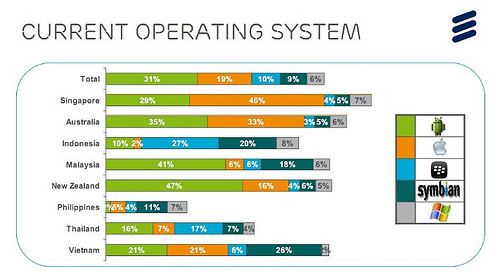

Handphone BlackBerry masih menjadi Handphone Terpopuler di Indonesia
Smartphone Android memang mengalami perkembangan cukup positif dari hari ke hari. Namun, perkembangan tersebut ternyata masih belum bisa mengalahkan jumlah pengguna handphone BlackBerry di Indonesia
Berdasarkan penelitian yang dilakukan oleh Ericsson ConsumerLab, pengguna handphone BlackBerry di Indonesia masih merupakan yang terbanyak. Jumlah prosentase pengguna BB di Indonesia mencapai angka 27 persen. Persentase tersebut mengalahkan sistem operasi lainnya.

Symbian, sistem operasi yang dikembangkan oleh Nokia nangkring di posisi kedua dengan prosentase sebesar 20 persen. Android yang merupakan OS open source milik Google duduk di peringkat ketiga dengan jumlah prosentase sebesar 10 persen.
Lalu bagaimana dengan pengguna BlackBerry di negara lain? Di negara maju seperti Singapura dan Australia, ternyata orang cenderung memilih produk Apple. Sedangkan di Malaysia, Vietnam serta Selandia Baru, OS berlogo robot hijau menjadi yang nomor satu.